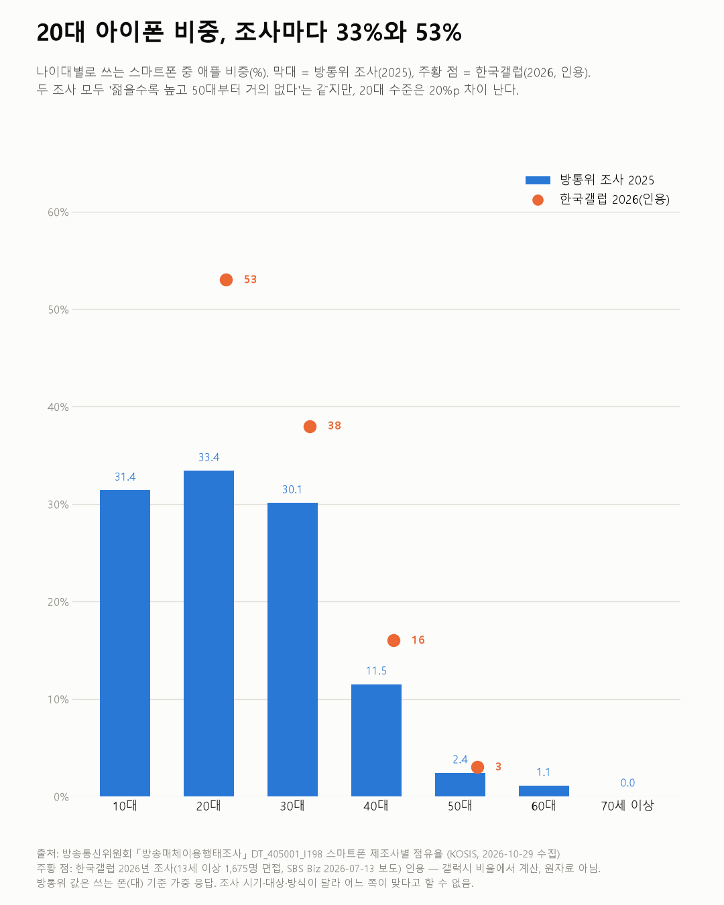
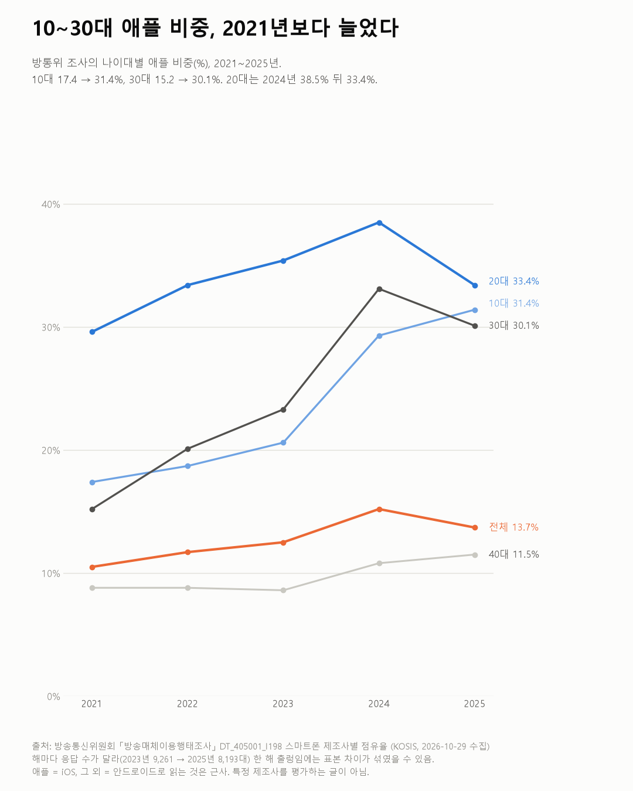

20대 아이폰 비중, 조사마다 33%와 53%
방송매체이용행태조사 2021~2025

질문
지금 쓰는 스마트폰의 제조사 비중은 나이대별로 얼마나 다른가? 2021년부터 2025년까지 바뀌었나? 같은 폰을 얼마나 오래 쓰나? (앱을 만들 때 대상 나이대에 따라 iOS·안드로이드 비중이 얼마나 다를지 가늠하려는 질문)
사용 데이터와 출처
| 데이터 | 출처 | 쓰임 |
|---|---|---|
| 스마트폰 제조사별 점유율 (KOSIS DT_405001_I198) | 방송통신위원회 「방송매체이용행태조사」 | 나이대·성별 제조사 비중, 2021~2025년 |
| 스마트폰 사용기간 (KOSIS DT_405001_I030) | 같은 조사 | 지금 쓰는 폰의 사용기간 분포 |
| (인용) 한국갤럽 스마트폰 사용 브랜드 조사 | SBS Biz 2026년 7월 13일 보도 | 13세 이상 1,675명 면접조사. 원자료가 아니라 기사 수치 |
- 값은 조사 응답자가 지금 쓰는 스마트폰 기준이다. 판매량이 아니다. 응답 수는 폰 대수 기준 가중값이다.
- 애플 = iOS, 그 외 = 안드로이드로 읽는 것은 근사다.
- 검증: 모든 해·집단에서 제조사 비율 합이 100%(반올림 ±1)인지 확인했다.
- 교차 확인: 방통위 발표 자료에서 제조사 수치는 찾지 못했다. 대신 다른 조사(한국갤럽)와 비교했고, 그 차이를 글의 중심에 뒀다.
- 수집일: 2026-10-29 (KOSIS 오픈API).
인사이트
1. 방통위 조사에서 2025년 애플 비중은 10대 31.4%, 20대 33.4%, 30대 30.1%다. 40대 11.5%, 50대 2.4%, 60대 1.1%, 70세 이상 0.0%로 나이가 많을수록 급격히 낮다. 전체로는 13.7%다.
2. 한국갤럽 2026년 조사는 20대 아이폰 비중을 53%로 본다. 30대 약 38%, 40대 약 16%, 50대 약 3%, 전체 19%다. '젊을수록 높고 50대부터 거의 없다'는 모양은 두 조사가 같지만, 20대 수준은 20%p 차이 난다.
3. 방통위 조사에서 10대와 30대의 애플 비중은 4년 사이 두 배 가까이 됐다. 10대 17.4% → 31.4%, 30대 15.2% → 30.1%다. 20대는 29.6%에서 2024년 38.5%까지 올랐다가 2025년 33.4%다.
4. 같은 폰을 오래 쓴다. 지금 폰을 3년 이상 쓴 비율이 2021년 18.8%에서 2025년 24.2%가 됐다.

한계
이 데이터로 말할 수 없는 것
- 조사마다 값이 다르다. 대상(방통위 표에는 만 6~9세 구분도 있어 어린이까지 포함된 것으로 보이고, 갤럽은 13세 이상), 조사 시기(2025 vs 2026), 방식, 가중 방법이 달라 생긴 차이로 보이지만 어느 쪽이 맞다고 할 수 없다. 앱 기획에 쓴다면 숫자 하나보다 '나이대에 따른 큰 차이'를 보는 것이 안전하다.
- 갤럽 수치는 기사 인용이다. 원자료를 확인하지 못했고, 30~50대 아이폰 비율은 기사의 갤럭시 비율에서 계산했다.
- 표본이 해마다 다르다. 방통위 조사 응답 수가 2023년 9,261대에서 2025년 8,193대로 줄었다. 20대의 2024→2025 하락 같은 한 해 변화에는 표본 차이가 섞였을 수 있다.
- 사용기간은 '지금 폰을 쓴 기간'으로 보인다. 교체 주기와 같지 않다. 문항 정의는 확인하지 못했다.
- 특정 제조사를 평가하거나 권하는 글이 아니다.
전제 기록
데이터를 보기 전에 적어둔 것, 그리고 보고 나서 바꾼 것
- 전제 기록(premises)(데이터를 받기 전에 작성)를 따랐다.
- 받은 뒤 바뀐 점: 보도 대조 중 다른 조사(한국갤럽)와 20대 값이 크게 달라, 비교 자체를 첫 인사이트·첫 차트로 올렸다. 인용 수치는 코드에서 따로 표시(QUOTE)했다.